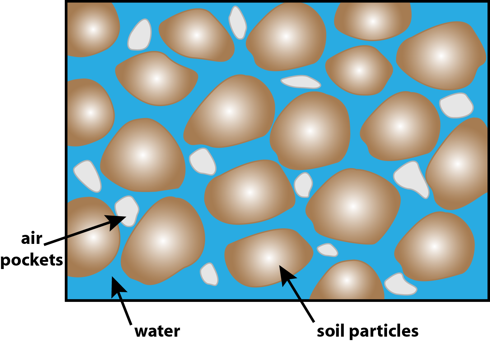
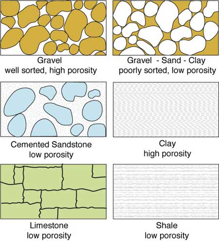
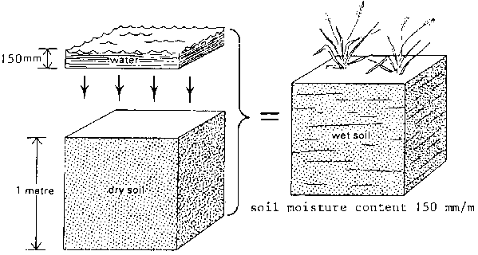

Soil Moisture
Lecture 1: Introduction

Funded by:


Composition of Soils
What is Soil?
Natural material covering the land surface of the Earth.

Soil components
Soils are very complex in their composition and quite variable in their occurrence and properties. In general, soil is constituted by four components:
- mineral matter
- organic matter
- water solution
- soil air
Soil is the product of

of parent material.
Parent Material?
Geological material

Organisms

Soil components exist in three PHASES:
- solid phase (mineral and organic matter)
- gaseous phase (air)
- liquid phase (water)

solid phase
forms the matrix or skeleton of the soil. Physically defined by soil texture and structure.

soil structure =
aggregations of soil textural components into larger units (particles) of different size and shape.
Spaces between soil particles are called
soil pores
Soil pores are cavities of different shape and size determined by the soil texture and structure. Soils gaseous and liquid phase components are stored and transported within the soil pores.

The volume fraction of soil pores is referred to as
Porosity $(\phi)$
Hence, it is defined as:
$$\phi = \frac{total\;volume\;of\;pores}{volume\;of\;soil}$$
Different soil types have different porosities as a result of textural and structural arrangement.
Storage, availability and transport of gaseous and liquid phase components in the soil depend on the porosity as well as on partitioning of the pores (pore-size distribution)
What do we mean bySoil Moisture?
Water / Soil Volume = Soil Moisture
indicates the quantity of water (liquid phase) contained in the soil.
Soil Moisture
Water content of soil, expressed involumetric units $$\theta = \frac{Water\;Volume\;(m^{3})}{Total\;Volume\;(m^{3})}$$ or in gravimetric units $$u = \frac{Mass\;of\;Water\;(kg)}{Mass\;of\;dry\;soil\;(kg)}$$
Further Definitions:
Volumetric water content $\theta$: $$\theta = \frac{V_{W}}{V_{T}}$$ Gravimetric water content $u$: $$u = \frac{M_{W}}{M_{S}}$$ Degree of Saturation $S$: $$S = \frac{V_{W}}{V_{V}} = \frac{V_{W}}{V_{T} \phi} = \frac{\theta}{\phi}$$
 Porosity $\phi$:
$\phi = \frac{V_{V}}{V_{T}}$
($V_{V}$...pore space)
Porosity $\phi$:
$\phi = \frac{V_{V}}{V_{T}}$
($V_{V}$...pore space)
Why is Soil Moisture so crucial?
Importance of Soil Moisture in the Climate System
- Soil-climate interactions are a key aspect of the climate system:
Feedbacks to the atmosphere/climate & memory component: Important for weather prediction, seasonal forecasting and climate change
Driver for climate variability and extreme events in transitional climate regions
Essential link between the energy, water and carbon cycles
Need for Global Soil Moisture Observations
- Socioeconomic Perspective (Nature from April 2008)
- Population growth, economic development and climate change put high pressures on water resources
- Current models suggest that more rain will fall, but less often
- Crisis from health sector will soon spill over to the energy and agricultural sectors
- Model Perspective
- Model physics at large scale are often not well understood
- Do we correctly model infiltration, evapotranspiration, etc.?
- Data Perspective
- Lack and limited representativeness of in-situ soil moisture data
- Hydrologic soil properties not properly described by soil maps
Global Soil Moisture Dynamics
Trends 1988 - 2010
Relevance of Soil Moisture for Climate Change
[Mariotti A, Zeng N, Yoon J-H., et al. (2008) Mediterranean water cycle changes:
transition to drier 21st century conditions in observations and CMIP3 simulations.
Environ. Res. Lett., 3, 044001.]
Soil Moisture and
The Earth's Water Cycle
Important component of water cycle
Influences hydrological and agricultural processes
Runoff potential and flood control
Drought development
Water available to plants

Earth Water Distribution

Total volume of soil moisture: 16 500 km3 (0.0012%)
Land-Atmosphere interaction

Regulating heat energy exchange through:
Development of weather patterns and the production of precipitation
Evapo-Transpiration
Movement of water to the air from soil, canopy interception, and waterbodies
Movement of water to the air from vegetation
How can soil moisture be measured?
Methods to measure soil moisture
- In-situ measurements
- TDR (time domain reflectometry)
- Gravimetric methods
- Radiological methods
- Microwave Remote Sensing
- Active sensors (e.g. ERS-1, ERS-2, MetOp ASCAT)
- Passive sensors (e.g. AMSR-E, AMSR2, SSM/I, SMMR)
In-situ measurements
Time Domain Reflectometry (TDR)
Two parallel rods are inserted in the soil, and the travel time of an electromagnetic wave is measured. Because of the special dielectric properties of water compared to those of soil, the soil moisture can be determined.
Gravimetric methods

take a core of soil using a cylindrical tool (core volume $V_c$)
weigh the core ⇒ weight value 1 ($m_1$)
bake it in an oven to evaporate all of the moisture
weigh it again ⇒ weight value 2 ($m_2$)
$\frac{m_1\;-\;m_2}{V_c}$ ⇒ volumetric water content
- disadvantages:
- destroys the site at which the soil is taken
- very labor intensive
Radiological methods
- indirect method to determine the water content
- neutron scattering (see Figure):
- the probe becomes surrounded by a cloud of neutrons
- dry soil ⇒ cloud of neutrons is less dense and extends further from the probe
- wet soil ⇒ neutron cloud is denser and extends to a shorter distance
- gamma absorption
Microwave Remote Sensing
The electromagnetic spectrum
Why do we use Microwaves?
- Microwaves: wavelengths 1 mm - 1 m
- Band designations:

- Advantages compared to visible/IR range
- microwaves penetrate the atmosphere even if there's rain or clouds
- independent of the sun as source of illumination
- deeper penetration into vegetation and soil
Active Microwave sensors
Active sensors send out their own electromagnetic energy and measure what comes back from the Earth's surface
- Based on the principle of echolocation
- Transmit a signal and measure the time it takes for an echo to return
- Knowing the speed of the signal, the distance can be estimated

- Sensors
- Altimeters
- Scatterometer (SCAT)
- Synthetic Aperture Radar (SAR)
Passive Microwave sensors
- Passive remote sensing systems record electromagnetic energy that is reflected or emitted from the Earth surface (see bottom right figure - we are interested in ①)
- Less sensitive to surface roughness and vegetation structure than active sensors, but affected by surface temperature
- Sensors
- Microwave radiometers
(Picture below: AMSR2 on the GCOM-W1 satellite)
- Microwave radiometers
Active and Passive Microwave sensors
- Active
- Observed quantity: backscattering coefficient $\sigma^0$, a measure of the reflectivity of the Earth surface
- Passive
- Observed quantity: Brightness temperature $T_B\;=\;e\;*\;T_S$
($e$...emissivity, $T_S$...surface temperature)
- Observed quantity: Brightness temperature $T_B\;=\;e\;*\;T_S$
Passive and active methods are interrelated through Kirchhoff's law:
$e\;=\;1\;-\;r$, where $e$ is the emissivity and $r$ is the reflectivity- Increase in soil moisture content
- backscatter $\uparrow$
- emissivity $\downarrow$
Different scanning configurations
- Side-, forward-, squint-looking radar
- Conical scan
Side-looking geometry (works the same way for satellites)
Conical scan (SeaWinds scatterometer)
Side-Looking Real Aperture Radar
- most radars used for remote sensing are side-looking
- the resolution in across-track direction (Figure: GRR) is determined by the length of the transmitted pulses
- The shorter the pulse, the better GRR
- the resolution in azimuth direction (Figure: AR) is determined by the size of the antenna
- The larger the antenna, the narrower the beam width, the better AR
GRR...ground range resolution
SRR...slant range resolution
AR...azimuth resolution
B...beam width
GRD...ground range distance
SRD...slant range distance
Synthetic Aperture Radar (SAR)
- To improve the azimuth resolution, a very long antenna is synthesized electronically
- Many pulses are sent towards the object
- Due to the motion of the platform, the frequency of the echoes is Doppler shifted
Active and passive missions

What's to come?
After having a look at our slides, you'll know more about...
- soil moisture in general, and how it can be observed via satellite remote sensing
- a few important basics about the physical background of microwave remote sensing
- the most important steps of the TU Wien soil moisture retrieval method
- applications for soil moisture data